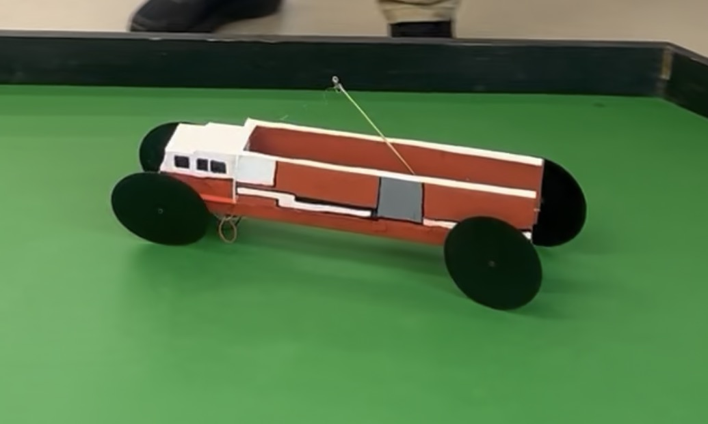
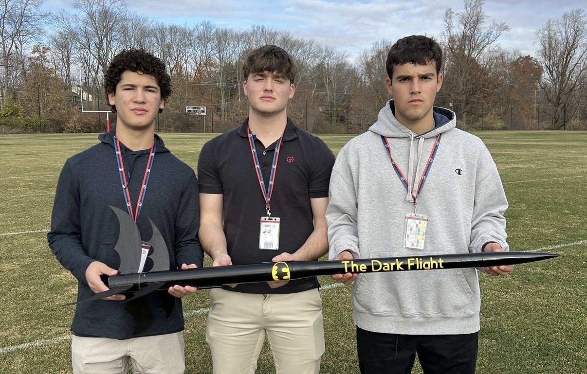

Team Lead | February 2025 – April 2025
I led the design and construction of a mousetrap-powered vehicle built to complete a complex racetrack autonomously in both directions. This project required careful attention to mechanical design, consistency, testing, and performance under competition conditions.
As team lead, I helped organize workflow, coordinate testing, and guide design adjustments that improved the car’s reliability and overall performance. The project strengthened my experience with iterative design, problem solving, and team-based engineering work.

Team Lead | September 2024 – December 2024
For this project, I directed the design and construction of a two-stage model rocket, coordinating work related to propulsion, recovery systems, and structural design. The project required balancing aerodynamic performance, stability, and reliability from concept through launch.
I helped organize team responsibilities and iterative testing in order to improve separation performance, flight stability, and overall design effectiveness. This experience developed my leadership, design thinking, and ability to manage technical challenges across a team project.
